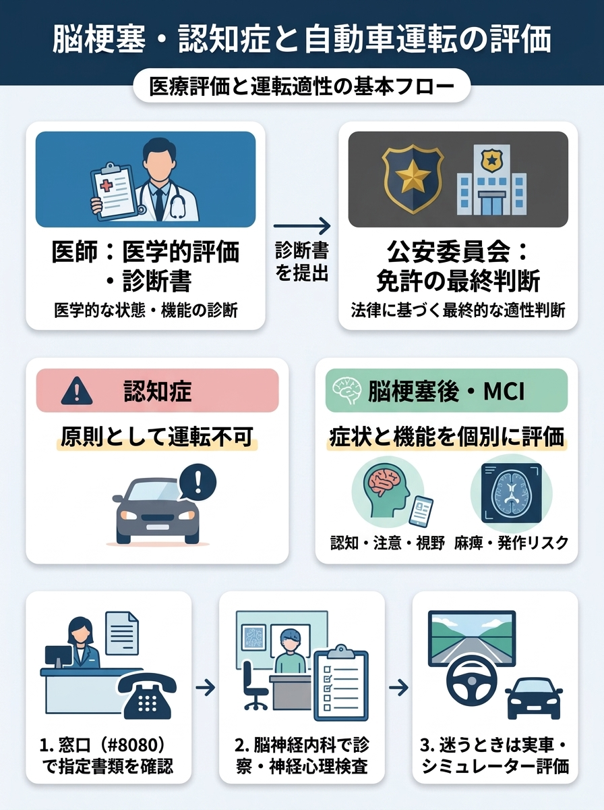
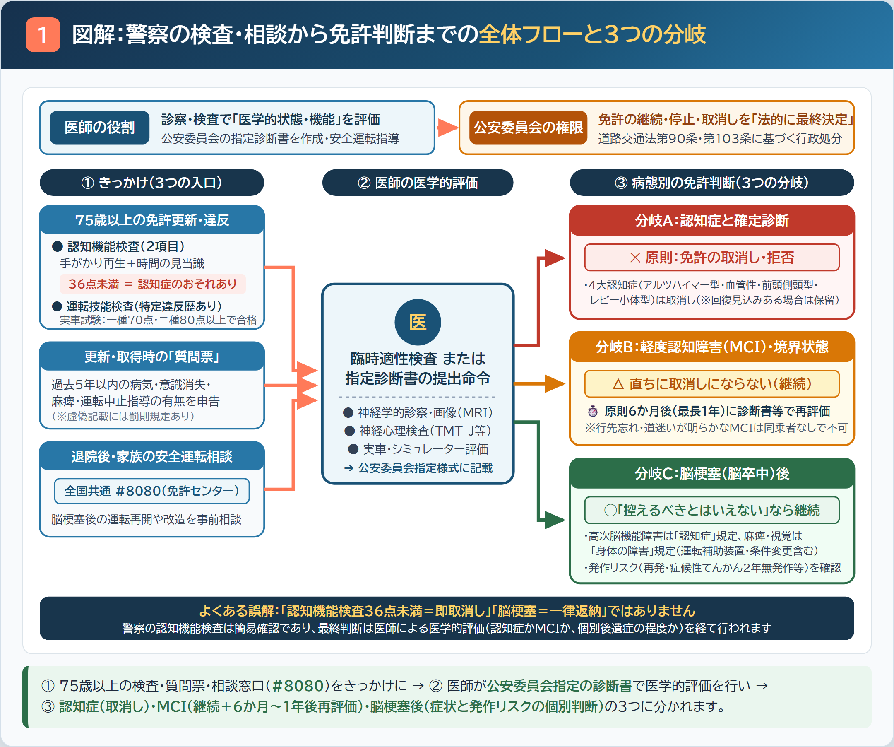
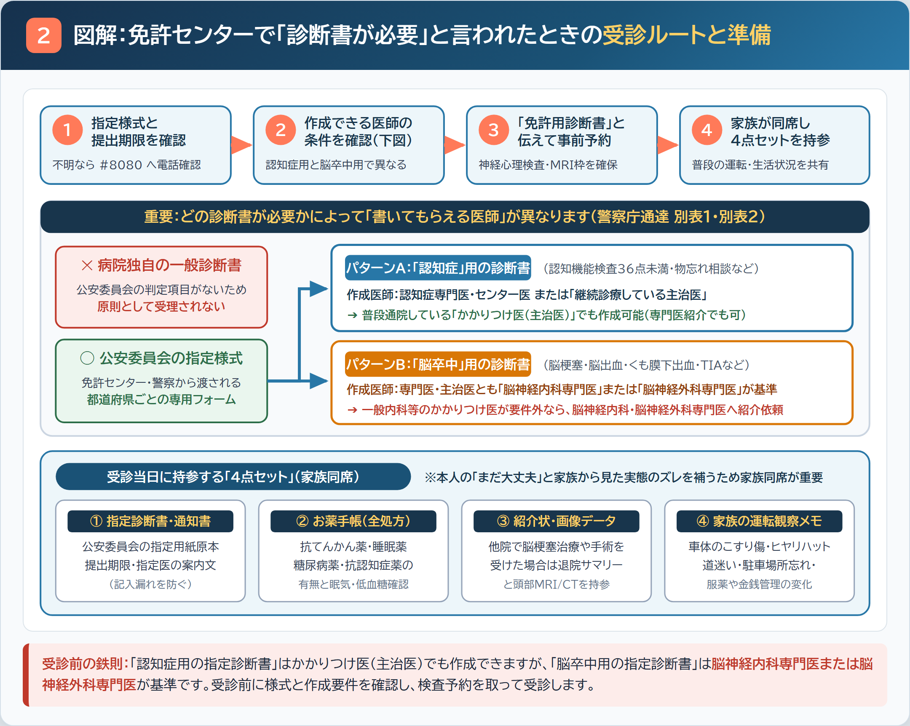
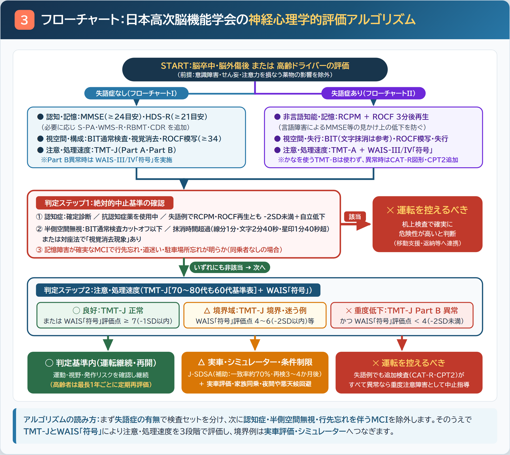
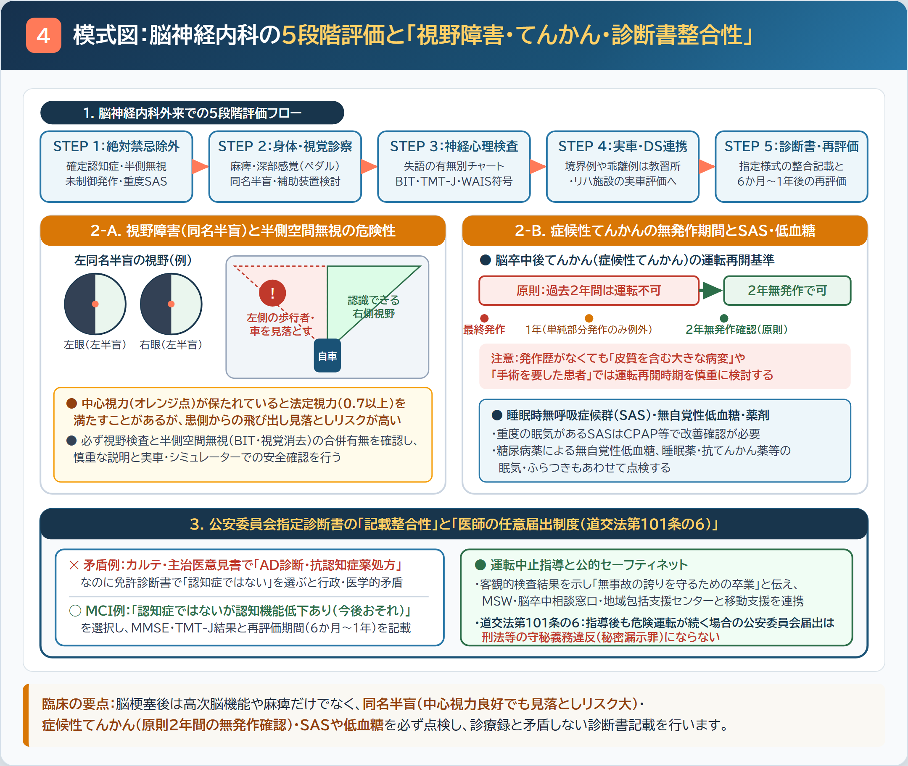

脳梗塞・認知症と自動車運転の評価｜図解・フローチャート一覧（原寸拡大）
各図解をタップすると原寸のPNG画像が開きます。医師は医学的な評価と診断書作成を担い、運転免許の行政判断は都道府県公安委員会が行います。
全体要約：脳梗塞・認知症と自動車運転の評価

図1：警察の検査・相談から免許判断までの全体フローと3つの分岐

図2：免許センターで「診断書が必要」と言われたときの受診ルートと準備

図3：日本高次脳機能学会の神経心理学的評価フローチャート

図4：脳神経内科の5段階評価と「視野障害・てんかん・診断書整合性」
